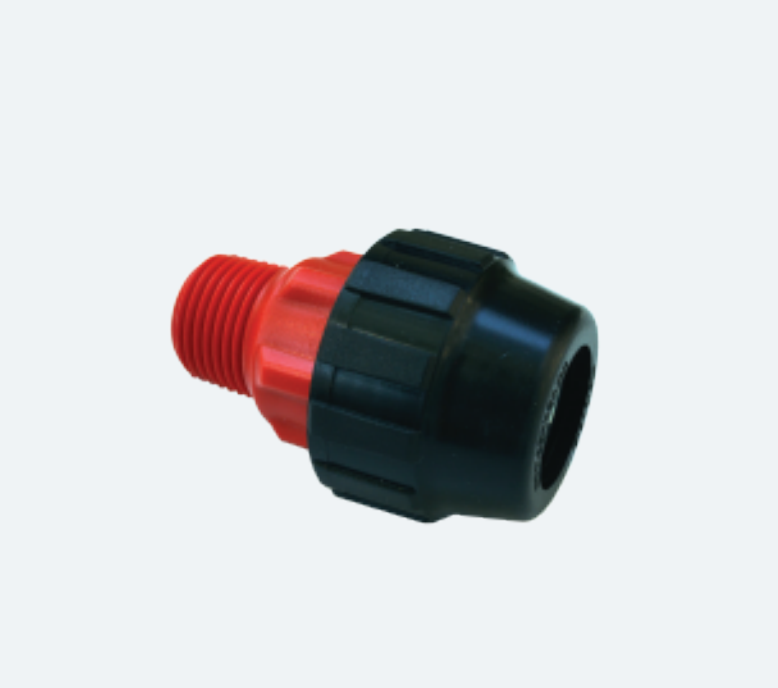

ADAPTADOR MULTITUBO
Permiten conectar 12 opciones posibles de tubos.
25.00 MXN*
HERRAJE DE SUJECIÓN
Conecta y sujeta el cuadro de medición a la caja: 1/2" / 3/4".
35.00 MXN* c/u
VÁLVULA ANTIFRAUDE
Bloquea o limita el suministro de agua y funciona como llave de paso.
96.00 MXN*
MEDIDOR
Medidor de Agua 1/2" chorro múltiple para agua potable.
360.00 MXN*
CAJA DE REGISTRO
Para instalación de toma domiciliaria bajo banqueta.
255.00 MXN*
* Todos los precios son más IVA. L.A.B. Guadalajara México. Mínimo de 50 unidades.
¡Consulte precios especiales para constructoras!
Esperamos su llamado
+52 133 2304 5078
Solicite cotizaciones por cantidad y reciba un descuento especial
ventas@reforestamexico.com
+52 133 2304 5078
Solicite cotizaciones por cantidad y reciba un descuento especial
ventas@reforestamexico.com